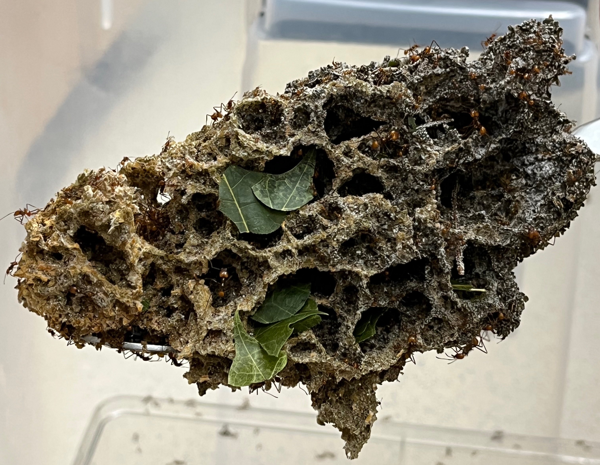

About Me
Hello! I am a NSF PRFB fellow in the Lofgren lab at the University of California-Berkeley where I study how genotype x enviroment interactions affect gene expression in Suillus species. I recieved my Ph.D. in Microbiology from the University of Wisconsin-Madison, where I was co-advised by Prof. Anne Pringle and Prof. Cameron Currie. My thesis work focused on the evolution of the fungal symbionts of fungus-growing ants, specifically how genetic diversity is organized and maintained in both the fungal mutualist Leucoagaricus and it's parasite Escovopsis. I am interested in ploidy cycling, the evolution of sex, and how both of these affect genetic variation in fungi. I love thinking broadly and critically about the terminology used to discuss sexual reproduction, and how that in turn affects the questions we (as scientists) ask about sex.

The cross section of a leafcutter ant fungus garden, made up of Leucoagaricus mycelia, ants, and other microbes.